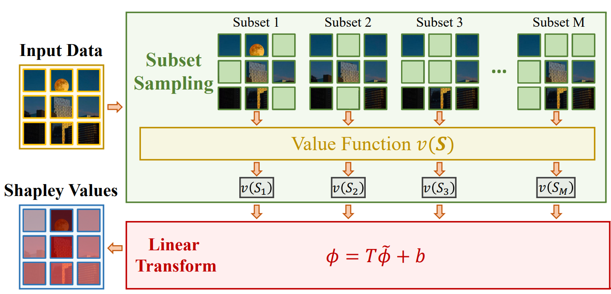
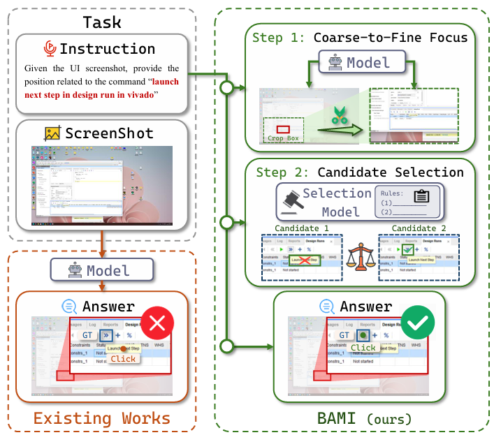
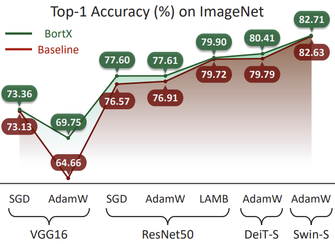
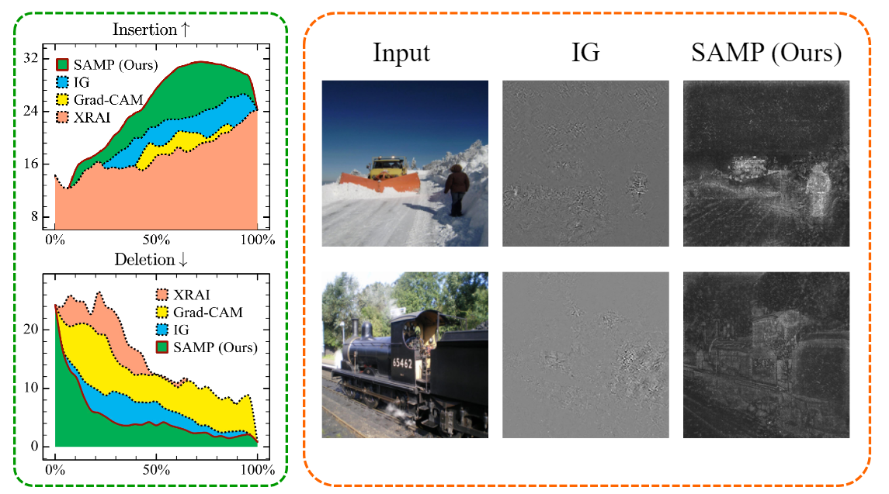
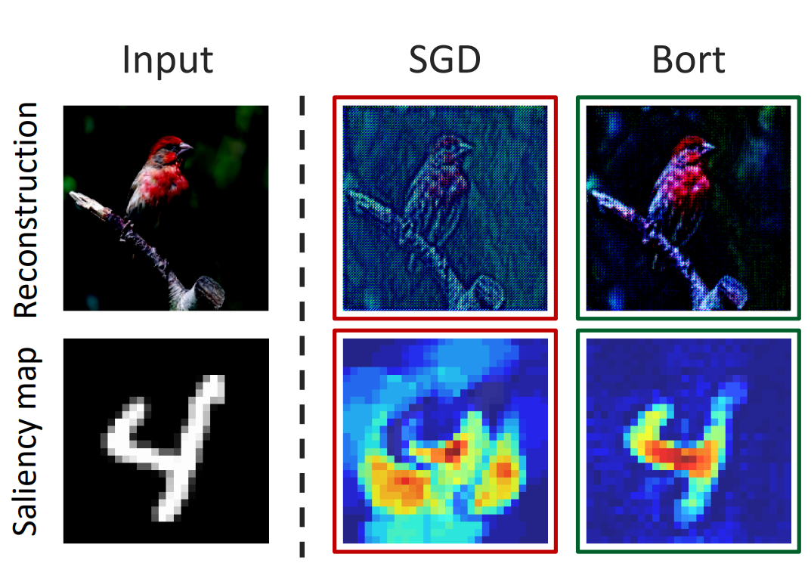
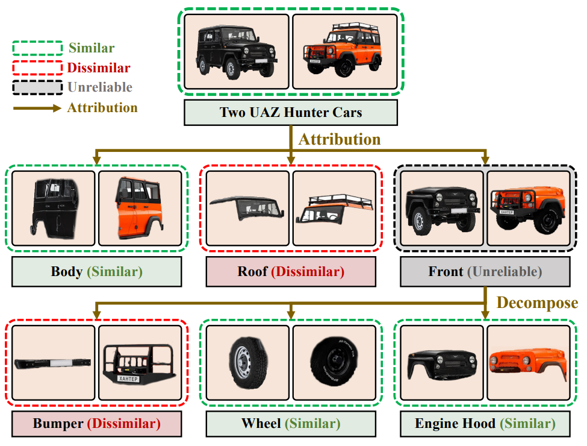
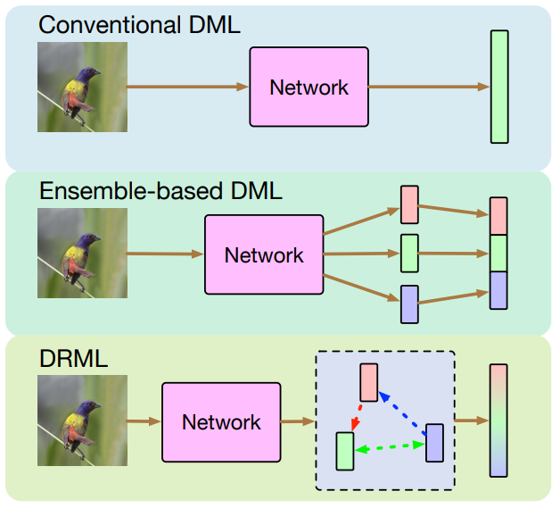
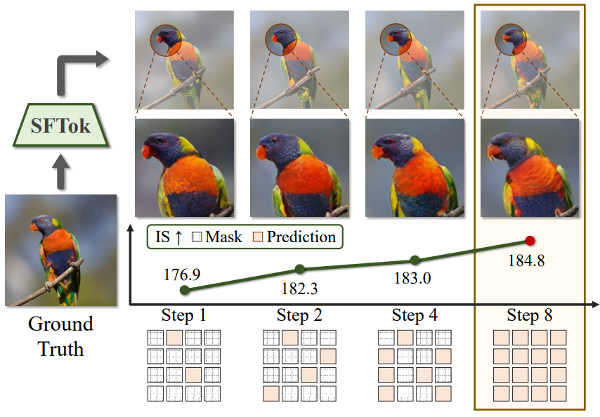
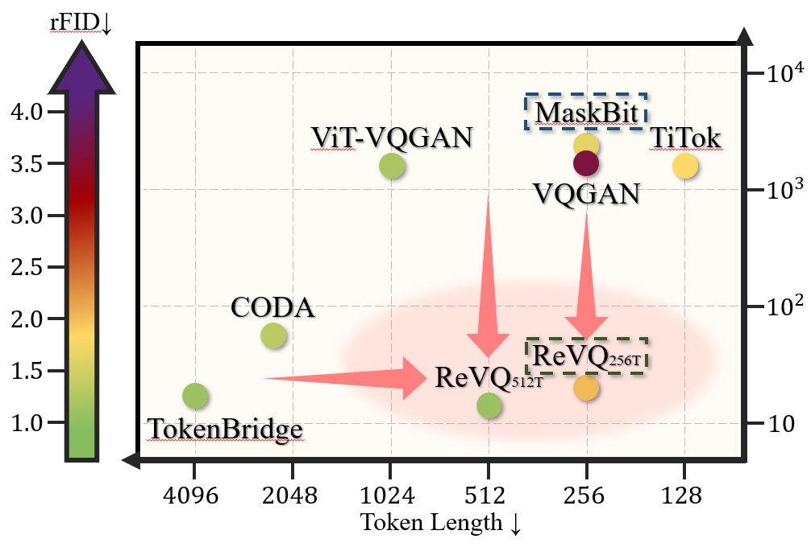
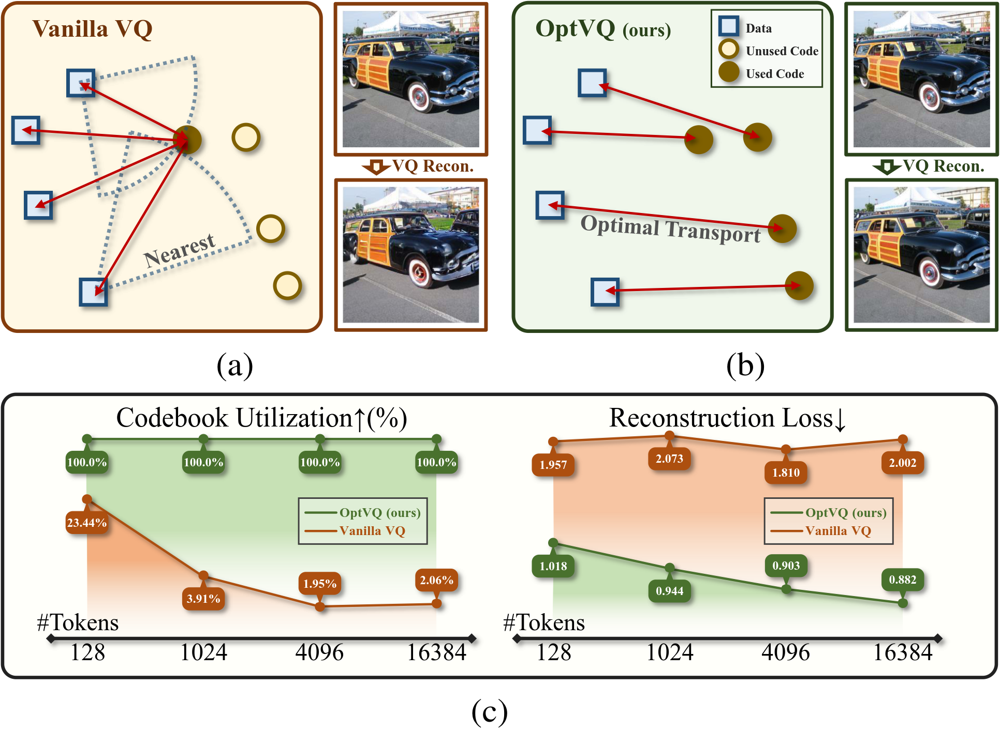

01
Embodied Intelligence & Multimodal Agents
Perceive / reason / act
- Multimodal reasoning, GUI grounding, and embodied intelligent systems.
- Connecting model capabilities with real-world perception and interaction.
Understanding intelligence. Building it into the world.
Postdoctoral Researcher/Tsinghua University
Co-founder & CEO/LoopEva
Leading research in the Embodied Intelligence Systems Group
I am a postdoctoral researcher at Tsinghua University, working with Prof. Jiwen Lu in the i-VisionGroup. I lead research in the Embodied Intelligence Systems Group, connecting advances in multimodal models with intelligent systems that perceive, reason, and act.
I am also the co-founder and CEO of LoopEva. Across research and entrepreneurship, I am interested in making intelligence more understandable, efficient, and useful in the physical world.
I received my Ph.D. in Control Science and Engineering from Tsinghua University in June 2026, advised by Prof. Jiwen Lu, and began my postdoctoral research in September 2026 as a Shuimu Scholar. Previously, I received a B.E. in Automation and a second B.A. in Economics from Tsinghua University in 2021.
From the representations a model learns to the decisions a system makes, my research connects understanding, efficiency, and action.
Perceive / reason / act
Represent / train / deploy
Interpret / diagnose / improve
* indicates equal contribution

This paper analyzes existing Shapley value estimators and proposes SimSHAP. Experiments validate that SimSHAP significantly accelerates the computation of accurate Shapley values.

This paper analyzes grounding biases in MLLMs and proposes BAMI, a training-free framework. Experiments validate its state-of-the-art performance on ScreenSpot-Pro.

This journal extension of Bort introduces a plug-and-play optimizer enforcing boundedness and orthogonality constraints derived from alignment and invertibility to enhance explainability, with a data-aware extension DBort.

We introduced the Concentration Principle and developed SAMP, an efficient model-agnostic interpreter incorporating infinitesimal constraint (IC) and momentum strategy (MS).

This paper proposes Bort, an optimizer for improving model explainability with boundedness and orthogonality constraints, derived from model comprehensibility conditions.

We propose AVSL, which employs a generalized similarity learning paradigm to represent the similarity between images with a graph for a more accurate and explainable measure.

This paper proposes to adaptively learn an ensemble of features that characterizes an image from different aspects, employing a relational module to capture correlations among features.

We investigate iterative approaches for constructing discrete tokenizers and propose SFTok. Analogous to the discrete diffusion paradigm, SFTok is well-suited for integration into Multimodal Large Models (MLLMs), facilitating the realization of a unified discrete diffusion framework.

To investigate the relationship between continuous and discrete tokenizers, we propose ReVQ. This method yields a high-performance VQ-VAE requiring only 40 GPU hours of training on a single RTX 4090.

This study addresses the training instability of Vector-Quantized Networks (VQNs) by introducing OptVQ, a new method using the Sinkhorn algorithm for optimal transport. It achieves full codebook utilization (100%) and outperforms current VQNs.
Sep. 2026 - Present
Prof. Jiwen Lu's laboratory. Leading research in the Embodied Intelligence Systems Group.
Current
Sep. 2021 - Jun. 2026
Tsinghua University · Department of Automation
Advised by Prof. Jiwen Lu. Visual model interpretability, multimodal model optimization, and visual representation learning.
Sep. 2017 - Jun. 2021
Tsinghua University · Department of Automation
GPA: 3.81/4.0. Ranked 1st out of 181 students.
Sep. 2018 - Jun. 2021
Tsinghua University · School of Economics and Management
A complementary foundation in economics and management.
Co-founder & CEO / LoopEva
LoopEva connects robot capability, real-world deployment, and continuous improvement. As co-founder and CEO, I work at the intersection of research, technical direction, and building intelligent systems for the physical world.
Explore LoopEvaTeaching Assistant · Numerical Analysis · Tsinghua University · 2021-2022